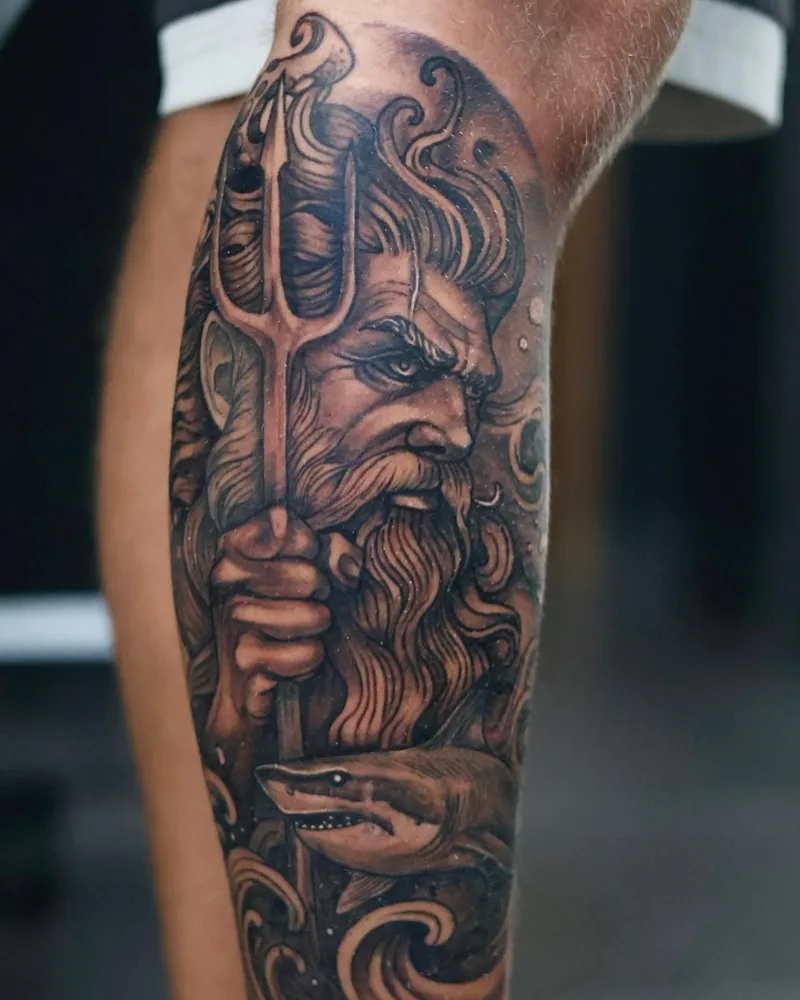
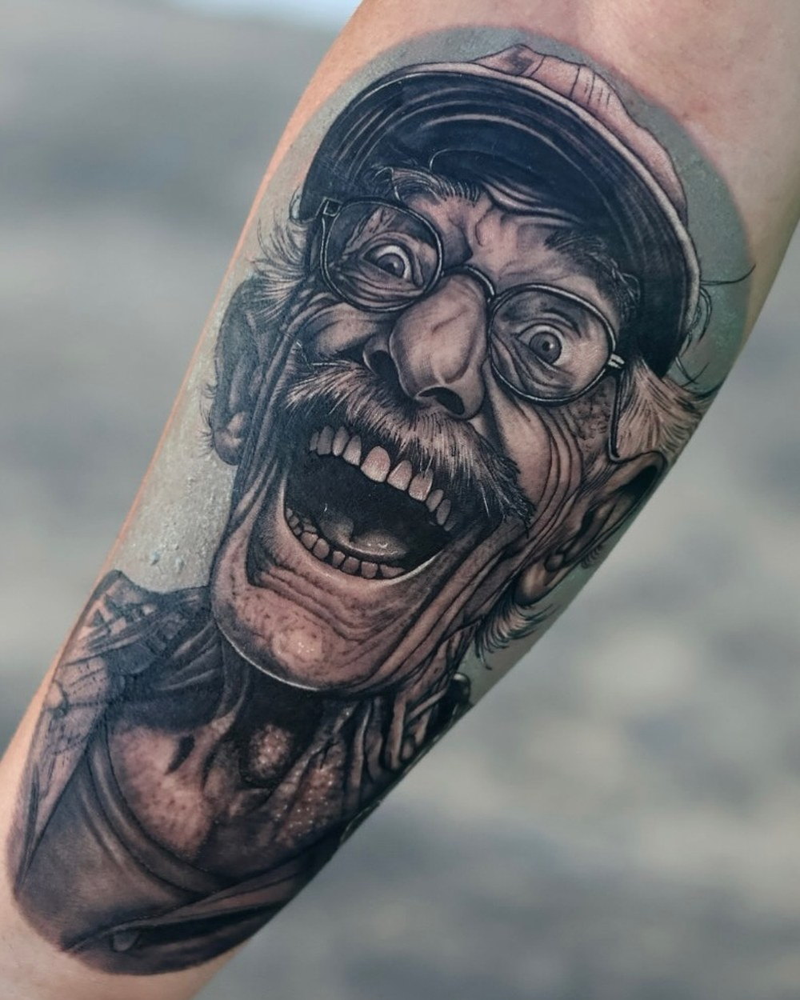
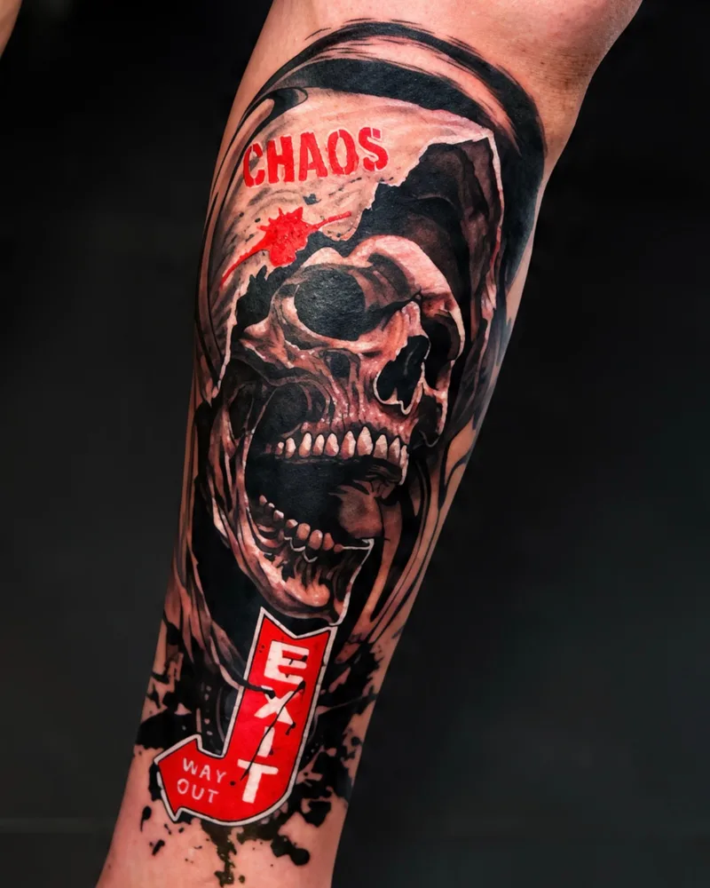
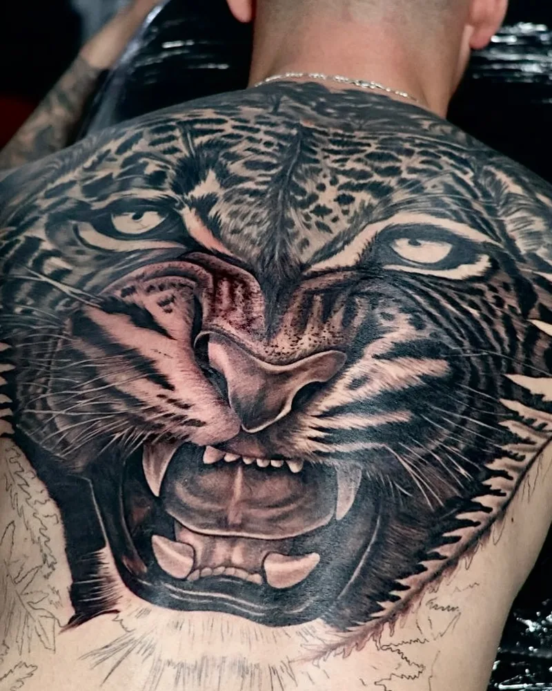
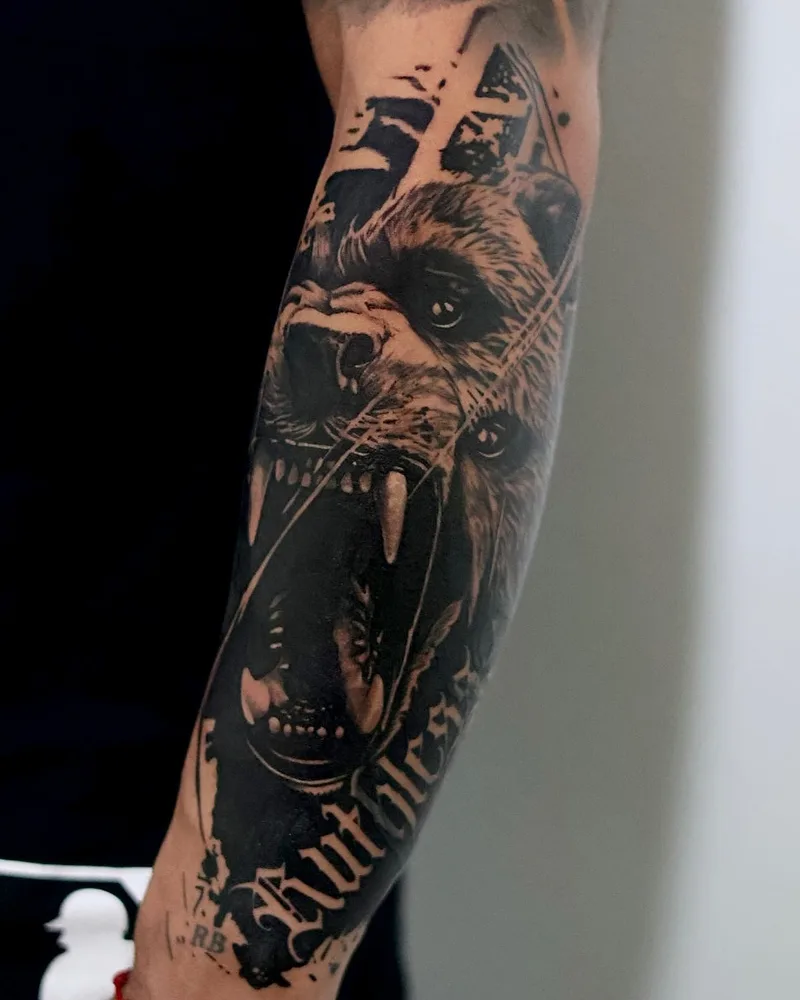
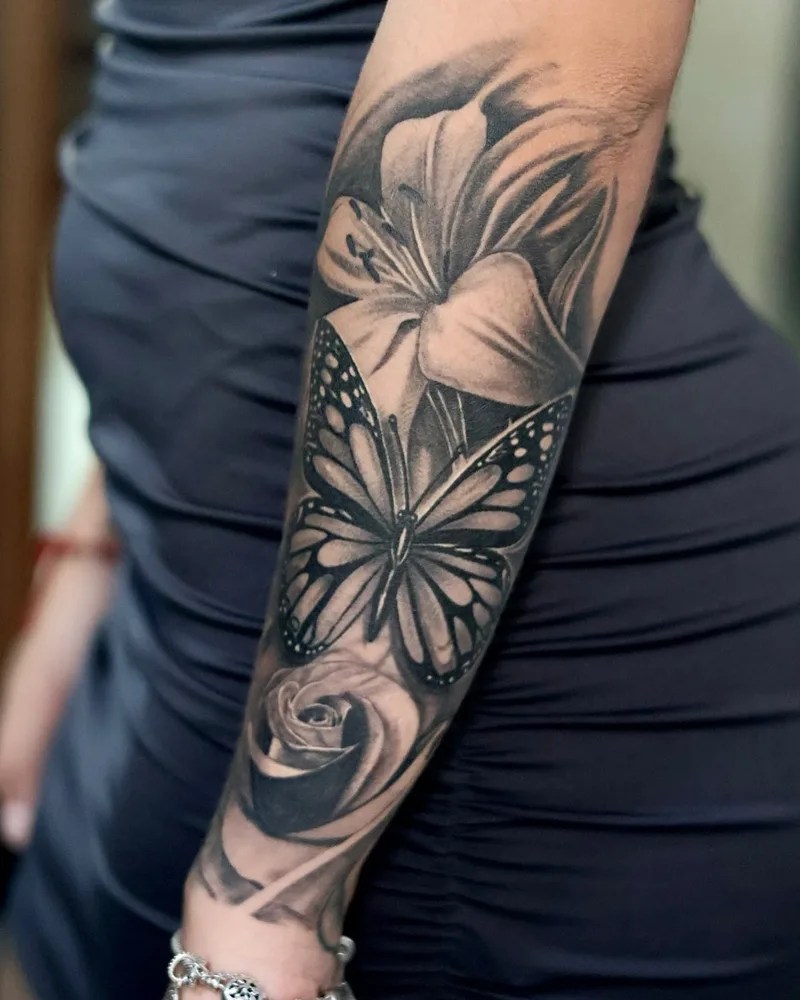
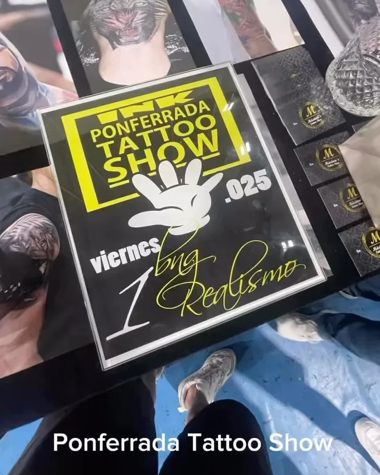

Realismo B&G
Retratos, animais e figuras com contraste e profundidade.
Realismo Black & Grey
Trash Polka
Máximo's Tattoo Shop
Lousada · Porto

Projetos exclusivos, desenhados de raiz para cada pele.

Sou o Bruno Máximos, tatuador e fundador da Máximo's Tattoo Shop, em Lousada, mesmo em frente à Escola Secundária, desde 2019.
Trabalho sobretudo realismo em Black & Grey: retratos, animais, mitologia e fechamentos de braço, perna e costas. Quando o projeto pede, junto o vermelho e os elementos gráficos do Trash Polka.
Cada desenho é feito de raiz para quem o vai usar, e é pensado para envelhecer bem na pele. Há clientes que viajam de Itália para tatuar comigo.

Retratos, animais e figuras com contraste e profundidade.

Realismo, preto, vermelho e elementos gráficos.

Braço, perna e costas pensados como uma só peça.

Uma tatuagem antiga dá lugar a um projeto novo.
Uma tatuagem não é feita só para o dia em que fica pronta. Estas peças foram fotografadas depois de curadas, algumas com mais de um ano.



Envias o tema, a zona do corpo e referências.
Crio um projeto exclusivo, à medida da tua pele.
Peças grandes são feitas em várias sessões marcadas.
Recebes as indicações para a cicatrização correr bem.



Preenche o pedido e ele chega pronto ao WhatsApp do Bruno, com tudo o que é preciso para o orçamento.
Rua Dr. Mário Soares, 271, Loja 10
4620-425 Lousada, Portugal
Em frente à Escola Secundária de Lousada. Tatuagem e piercing.